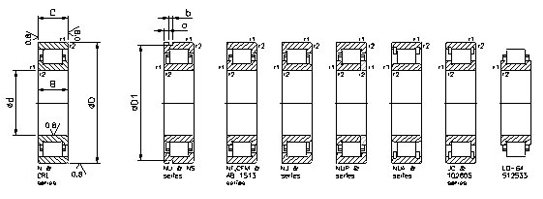

Cylindrical Roller Bearings
Galaxy Bearing Ltd. manufactures many types and sizes of cylindrical roller bearings, the majority being single row bearings with cage & also with a full compliment of rollers. The Galaxy Bearing Ltd. manufacturing program also included precision single and double row cylindrical roller bearings for machine tool applications and double cylindrical roller bearings for rolling mill and other heavy engineering applications as per the customer requirements.
All Galaxy Bearing Ltd. cylindrical roller bearings represent the latest state of the art Bearings. The contact geometry between roller and raceway has been much improved by the introduction of the “logarithmic” profile, which provides for optimum stress distribution in the bearing. Optimized surface finishes favors lubricant film formation and the correct rolling motion of the cylindrical rollers. These improvements have considerably increased the performance of Bearings.
The rollers of single row cylindrical roller bearings with cage are guided between integral flanges on one the bearing rings. The bearing rings with integral flanges and the roller and cage assembly can be withdrawn from the other ring. This facilitates mounting and dismounting particularly where both rings have to have interference fits because of the load conditions.
Galaxy Bearing Ltd. single row cylindrical roller bearings have high radial load carrying capacity and also high speed capability. They are produced in different designs, which differ in the configuration of the flanges.
Bearings of the NU type have two integral flanges on the outer ring and an inner ring without flanges. Where as the N types have two integral flanges on the inner ring and outer ring without flanges.
Cylindrical roller bearings of the NJ type have two integral flanges on the outer ring and one integral flange on the inner ring. So that axial location can be provided for the shaft in one direction.
Type NUP cylindrical roller bearings have two integral flanges on the outer ring and the inner ring have one integral and enabling the bearings to locate a shaft axially in both directions.
NJ type bearings when used with an HJ angle ring can also be used to locate the shaft axially in both directions whilst the combination of an NU bearing with an HJ angle rings at both sides of NU type bearings as this can lead to axial compression of the rollers.The magnitude of the axial load which can be accommodate by bearings of the NJ and NUP types and by the angle ring can be determined from the information given under "Dynamic axial load carrying capacity"
EC design bearings
Galaxy Bearing Ltd. Cylindrical roller bearings of the EC design have an appreciably higher load carrying capacity for the same boundary dimensions than earlier designs because of improvements to the internal geometry. The new design of the guide surfaces of the flanges and of the roller ends has also meant that the EC bearings have a high axial load carrying capacity. The favorable contact conditions also contribute to better lubrication of the roller end/flange contact zone and to lower operating temperatures. These characteristics make Galaxy Bearing Ltd. cylindrical roller bearings of the EC design particularly useful.
In addition to the bearings shown in this catalogue, Galaxy Bearing Ltd. also manufactures a large number of other single row cylindrical roller bearings.
The boundary dimensions of the single row cylindrical roller bearings listed in the tables conform to ISO 15-1981, where applicable, and the dimensions of the angle rings shown in the tables are in accordance with ISO 246-1978, where applicable.
The ability of single row cylindrical roller bearings to accommodate angular misalignments of the inner ring with respect to the outer ring, and thus to compensate for errors of alignment, is limited to a few minutes of arc.
These guideline values apply provided the positions of the shaft and housing axes are constant. Larger misalignments are possible, depending on the load and requisite life. In such cases it is recommended that the Galaxy Bearing Ltd. application services be contacted.
Galaxy Bearing Ltd. single row cylindrical roller bearings are manufactured to normal tolerances as standard. The values for these tolerances are mentioned in the general information of Bearings.
Galaxy Bearing Ltd. single row cylindrical roller bearings are produced with normal internal clearance as standard; the majority of the bearings are also available with C3 radial internal clearance and some with the appreciably greater C4 clearance.
The values for the clearance correspond to DIN 620, parts 4 for the size range covered by this standard and are given in the table. The values apply to bearings before mounting and under zero measuring loads.
Cylindrical roller bearings of the NUP type and NJ type with HJ angle rings, which can serve to locate shafts in both directions. The values given in the table on for axial internal clearance should be considered as guideline values. Because of roller tilting during measurement of the axial internal clearance, increases in the clearance are possible.
Galaxy Bearing Ltd. cylindrical roller bearings undergo a special heat treatment. When fitted with a cage of pressed steel or brass, they can be used at temperatures of up to +1500 C without there being any inadmissible dimensional changes.
Galaxy Bearing Ltd. single row cylindrical roller bearings are produced with the standard cages shown in the table below. Bearings fitted with glass fiber reinforced polyamide 6,6 cages (designation suffix P) can be used at operating temperatures up to +1200 C. for bearing arrangements which have to operate at high temperatures continuously or under arduous conditions, these bearings can be supplied with a pressed steel cage (suffix J) or a machined brass cage (suffix M or MA) to order instead of the polyamide cage. Bearings which incorporate a pressed steel cage as standard can also be supplied with a machined brass cage, again to order. The availability of bearings fitted with cages other than the standard should be checked before ordering.
